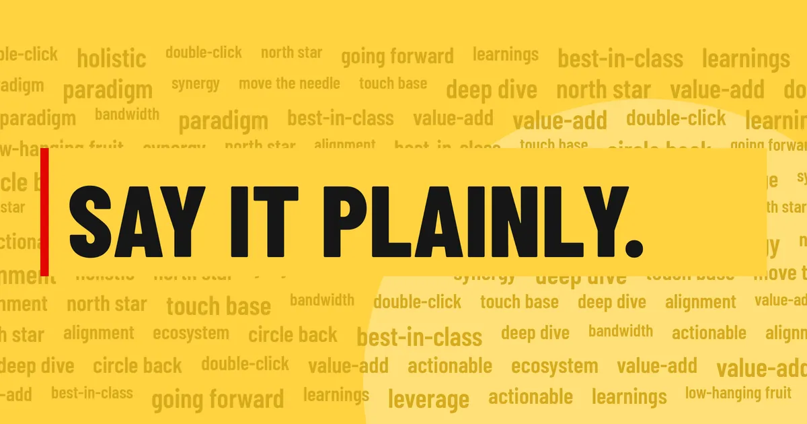
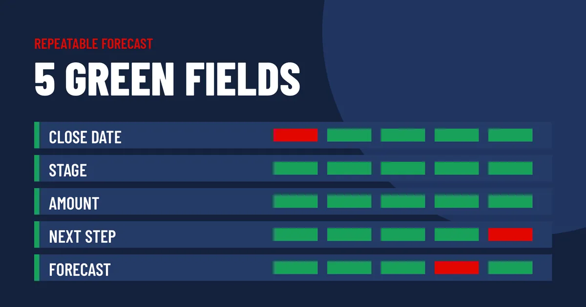
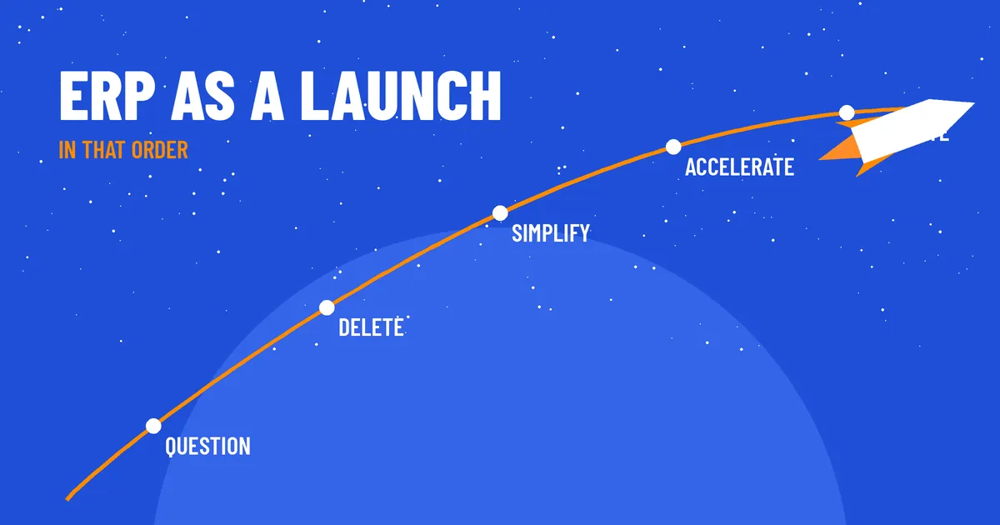
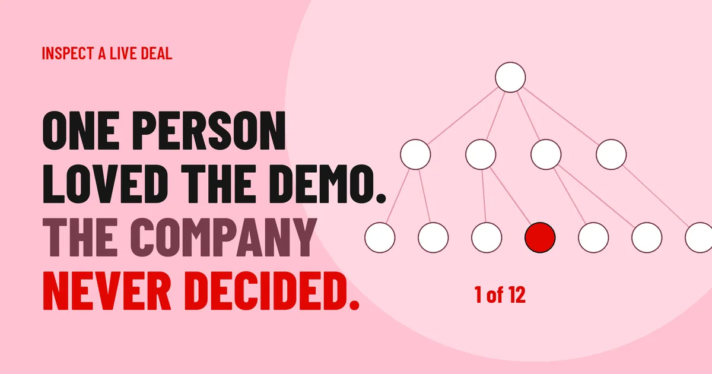
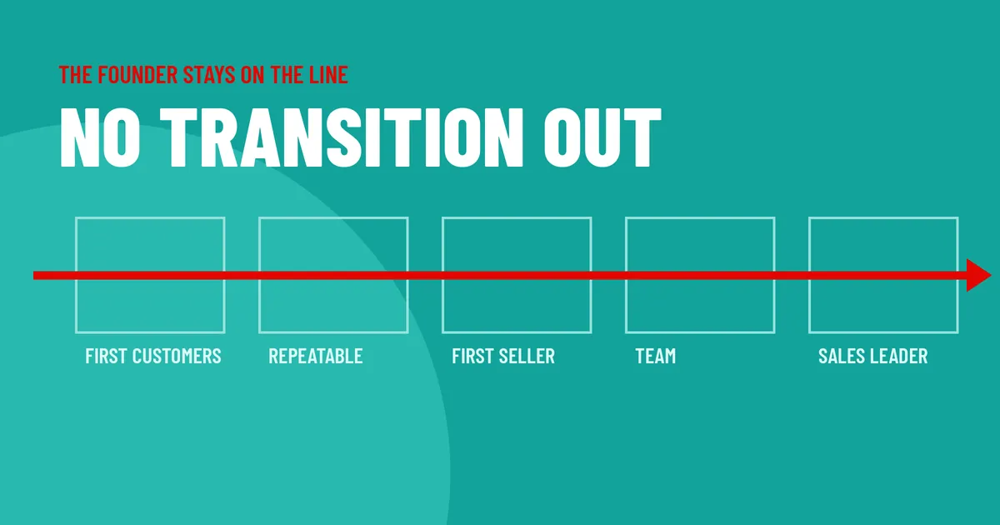
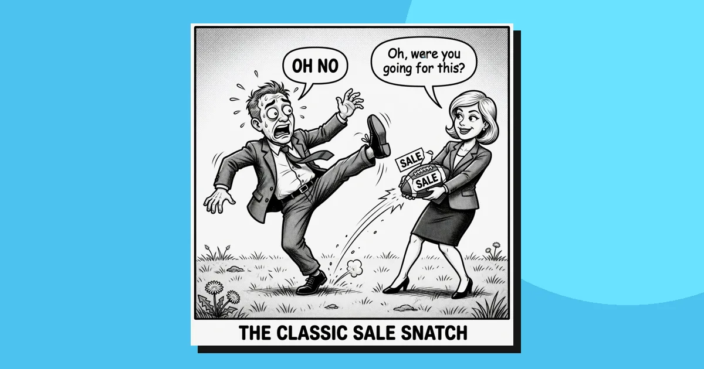
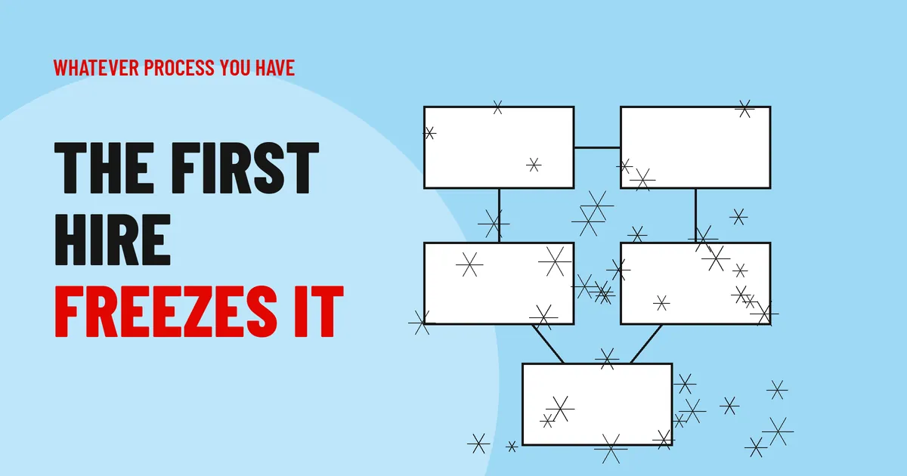
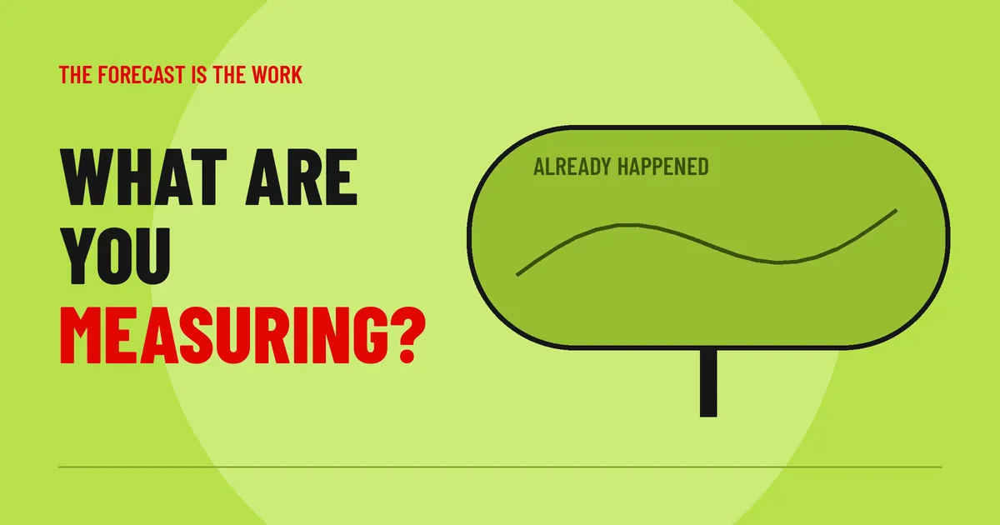
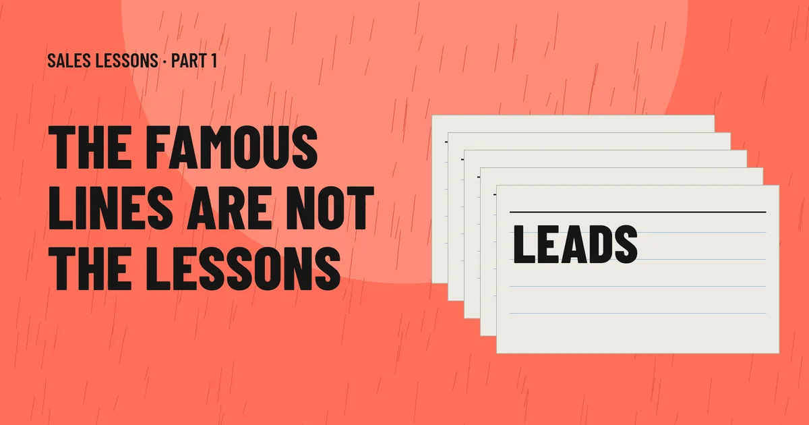
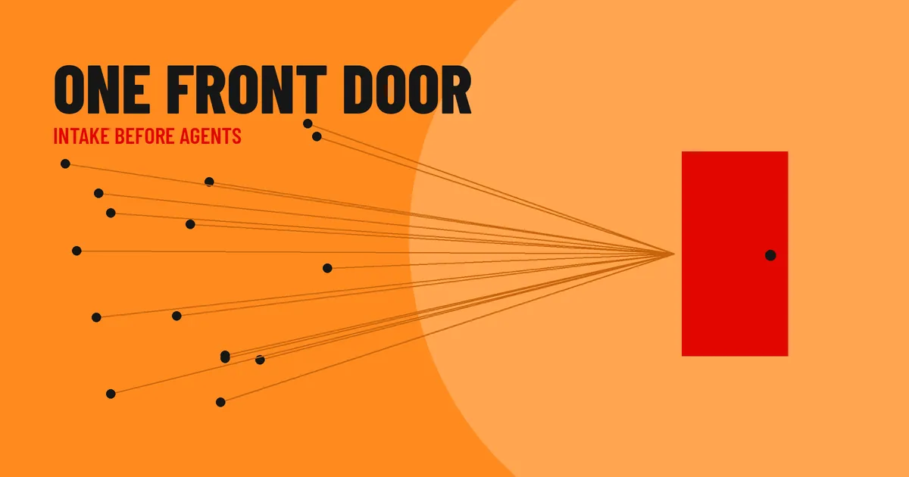

Blog
From the field.
The sale, the language, the hire, the demo that was theater. Steal a line. Use it on Monday.

Language in business continues to suffer
Jargon does not make you sound smart. It hides.

Repeatable Forecast: 5 Green Fields
Crushing your forecast is awesome. It also means you need to get better at forecasting.

SpaceX as ERP strategy: how to be less dumb
If you did not delete anything, you did not transform anything.
More from the field

We already use something for that.
Do not compare features. Ask what happens after the data leaves that system.

One person loved the demo. The company never decided.
One person liking it is a start. The company still has to decide.

There is no transition out of sales as a founder
The roles change. One founder stays the steward of revenue.

Equal commitment
The demo was theater if they never owed you a next step.

The first hire freezes the process
Headcount is not a sales operating system.
Are you hawking your shiny object?
Or solving a problem they already have.

What are you measuring?
The dashboard is what already happened. The forecast is the work.

Glengarry Glen Ross sales lessons: Part 1
The famous lines are not the lessons. Roma skips the conference to be with a customer.

From chatbots to agentic procurement
Agents without a front door decide in a vacuum.